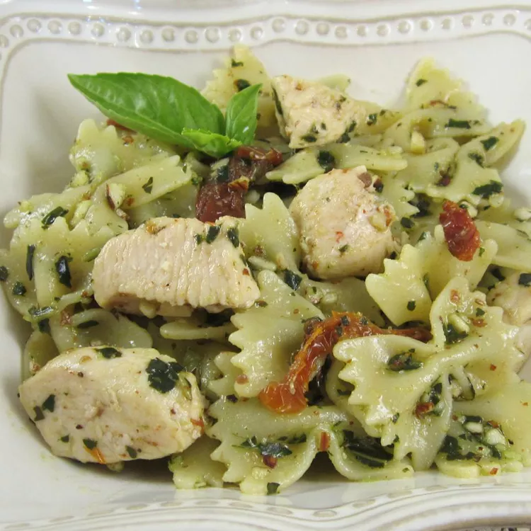

Pesto Pasta with Chicken
This chicken pesto pasta is easy and delicious. Serve with crusty bread and salad for a quick dinner. Use as much or as little pesto sauce as you like. Using homemade pesto will taste even better, but it adds to prep time. Enjoy!

Ingredients
- 1 (16 ounce) package bow tie pasta
- 1 teaspoon olive oil
- 2 cloves garlic, minced
- 2 skinless, boneless chicken breast, cut into bit-sized pieces
- 1 pinch crushed red pepper flakes, or to taste
- 1/2 cup pesto sauce
- 1/3 cup oil-packed sun-dried tomatoes, drained and cut into strips
Directions
Step 1
Bring a large pot of lightly salted water to a boil. Add pasta and cook until al dente, 8 to 10 minutes